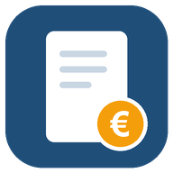

GestionProAvez-vous une plateforme de facturation ?
Vos factures partent au format électronique par une plateforme de facturation : GestionPro les y dépose pour vous, d'un clic. Pour l'instant, GestionPro fonctionne avec Qonto.
Oui, j'en ai une
Qonto
Autres plateformesBientôt
Votre plateforme n'est pas dans la liste ? Vous pouvez aussi ouvrir un compte Qonto gratuit à côté, juste pour vos factures.
Non, pas encore
Prenez Qonto : sa facturation électronique est gratuite, avec ou sans compte bancaire Qonto. L'inscription prend quelques minutes.
- Créez votre compte Qonto Facturation.
- Revenez ici et cliquez sur « J'ai mon compte : le relier ».